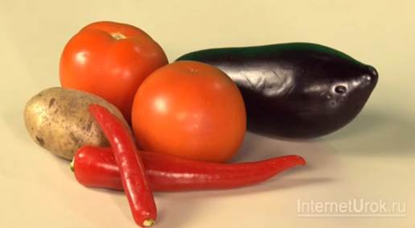
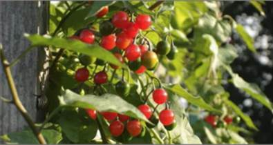
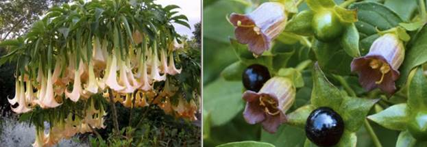
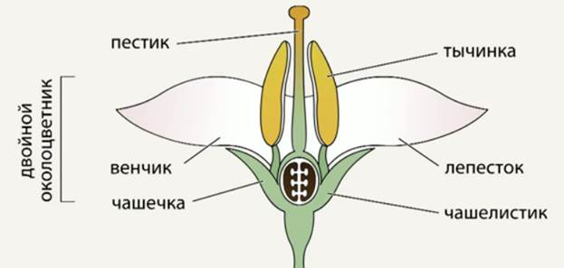
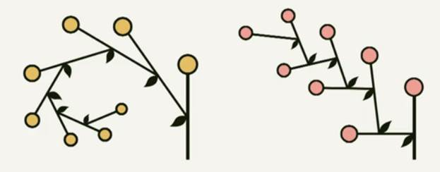
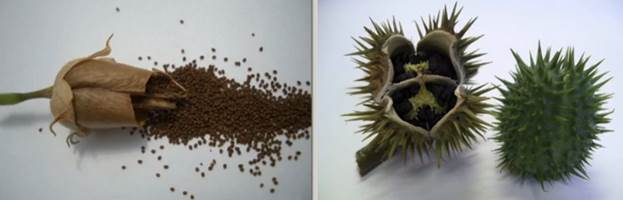
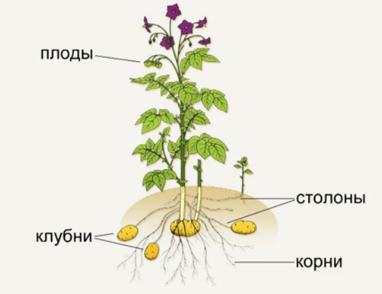

Культурные представители этого семейства хорошо известны: это картофель (один из самых важных для нас овощей), помидоры, перец, баклажаны (Рис. 1).

Рис. 1. Культурные представители семейства Пасленовые (Источник)
Семейство пасленовых довольно-таки распространенное и разнообразное по своим видам. На нашей планете произрастает более девяноста родов пасленовых и около трех тысяч видов. Они широко распространены по всему земному шару, но больше всего их насчитывается в Центральной и Южной Америке и в тропических районах.
В нашем умеренном климате среди дикорастущих наблюдается паслен сладко-горький, это растение ядовитое и используется как лекарственное (Рис. 2).

Рис. 2. Паслен сладко-горький (Источник)
Кроме паслена сладко-горького к дикорастущим растениям этого семейства можно отнести дурман и белену (Рис. 3).

Рис. 3. Дурман и белена (Источник)
Как правило, к представителям этого семейства относятся различные виды однолетних и многолетних трав, но среди пасленовых также встречаются кустарники, полукустарники и даже деревья.
Представители семейства пасленовых имеют простые листья, которые у большинства видов расположены поочередно. Если вы обращали внимание, то знаете, что пасленовые растения имеют обоеполые и одиночные цветки с двойным околоцветником, а их чашечки – пятизубчатые чашелистики. Каждый цветок пасленовых растений имеет пять тычинок и один пестик, а венчик состоит из пяти сросшихся лепестков (Рис. 4).

Рис. 4. Цветок семейства пасленовых (Источник)
Из пестика образуются плоды. Цветки у пасленовых собраны в соцветия, их два вида: одно называется завиток, а другое – извилина (Рис. 5).

Рис. 5. Виды соцветий семейства пасленовых: завиток и извилина (Источник)
Эти соцветия устроены довольно просто, но с точки зрения биологии их относят к соцветиям сложным. Чем отличаются простые от сложных соцветий, мы рассмотрим в разделе, посвященном соцветиям.
Плоды у пасленовых бывают двух видов: в виде ягод или коробочки. Так, например, у таких известных представителей пасленовых, как томат или паслен, плодом является ягода. У картофеля мы едим подземную часть – клубни, а его ягоды ядовиты. А вот у ядовитых видов, таких как белена или дурман, плод представлен в виде коробочки – сухого многосемянного вскрывающегося плода (Рис. 6).

Рис. 6. Семена табака в коробочке, плоды дурмана (Источник)
Клубни картофеля – его подземные побеги, это не плоды картофеля, а его подземная ветка. Клубни возникают у картофеля на подземных однолетних побегах, на подземных столонах. У картофеля два метаморфоза, два видоизменения – столоны и клубни (Рис. 7).

Рис. 7. Метаморфозы картофеля (Источник)
Следует отметить, что практически все органы пасленовых содержат такое ядовитое вещество, как соланин. Это семейство выработало за долгие годы эволюции большое разнообразие различных ядов. Как правило, он содержится в зеленых частях растений. Зеленые клубни картофеля содержат соланин – вещество, образующееся в них под воздействием солнечного света. При отравлении соланином наблюдаются тошнота, рвота, боль в животе. Тяжелые отравления соланином могут привести даже к смерти.
Поэтому картофель необходимо хранить в темном помещении.
Мы рассмотрели важное семейство Пасленовые, его представителей их строение и особенности.
Список литературы
1. Пасечник В.В. Биология 6 класс. Бактерии, грибы, растения. – Дрофа, 2011.
2. Корчагина В.А. Биология 6-7 классы. Растения, бактерии, грибы, лишайники. – 1993.
3. Пономарева И.Н., Корнилова О.А., Кучменко В.С. Биология 6 класс. – 2008.
Дополнительные рекомендованные ссылки на ресурсы сети Интернет
1. Интернет-сайт Beaplanet.ru (Источник)
2. Интернет-сайт ecosystema.ru (Источник)
3. Ежедневный познавательный журнал «ШколаЖизни.ру» (Источник)
Домашнее задание
1. Какие культурные представители относятся к семейству Пасленовые?
2. Каково строение цветка пасленовых?
3. Какие виды плодов пасленовых вы знаете?